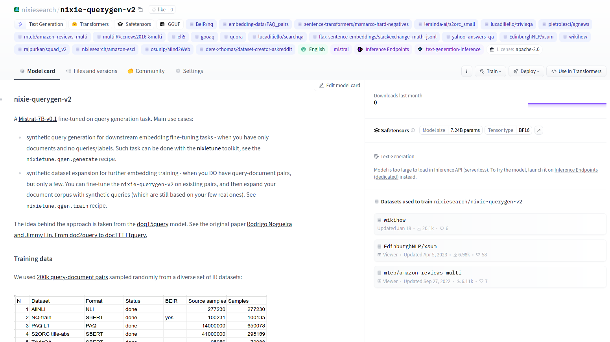

A front-end to SBERT/Transformers/TRL/PEFT
{
"query": "pizza",
"doc": "Standard Serious Pizza",
"neg": [
"Burgermeister",
"Risa Chicken",
]
}
{
"seq_len": 128,
"target": "infonce",
"num_negatives": 8,
"train_dataset": "nixiesearch/amazon-esci",
"eval_dataset": "nixiesearch/amazon-esci",
"train_split": "train[:10%]",
"eval_split": "test[:10%]",
"model_name_or_path": "sentence-transformers/all-MiniLM-L6-v2",
"output_dir": "out",
"per_device_train_batch_size": 512,
"per_device_eval_batch_size": 512,
"fp16": true,
"gradient_checkpointing": true
}No labels? No problem!
python -m nixietune.crossencoder conf.json
{
"seq_len": 128,
"train_dataset": "nixiesearch/amazon-esci",
"eval_dataset": "nixiesearch/amazon-esci",
"train_split": "train",
"eval_split": "test_1k",
"model_name_or_path": "mistralai/Mistral-7B-v0.1",
"output_dir": "out",
"num_train_epochs": 1,
"per_device_train_batch_size": 28,
"per_device_eval_batch_size": 224,
"fp16": true,
"gradient_checkpointing": true,
"dataloader_num_workers": 14
}small dataset, 1K queries
large dataset, 70K queries